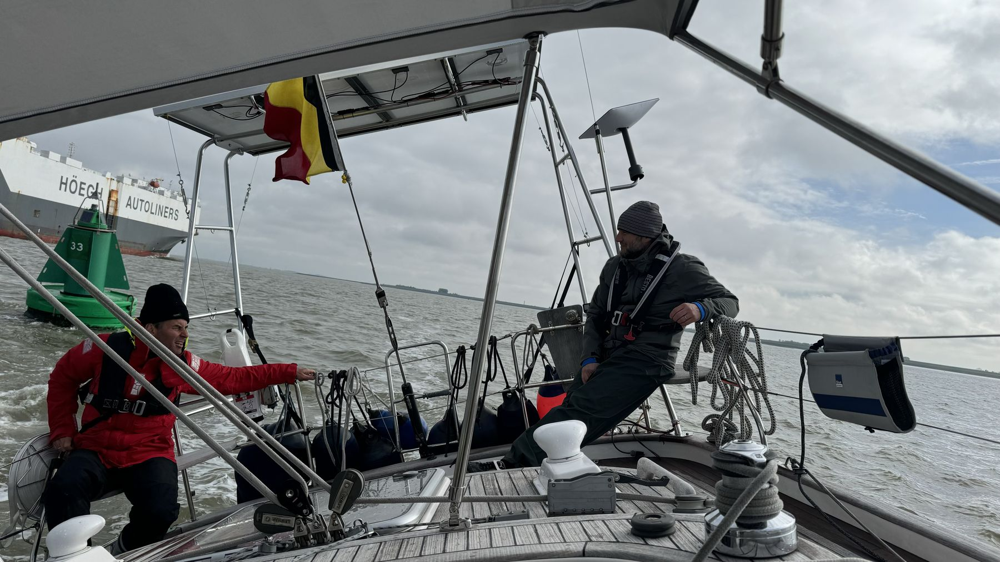
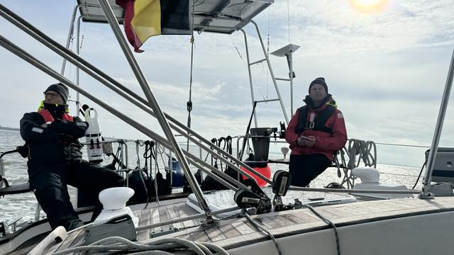
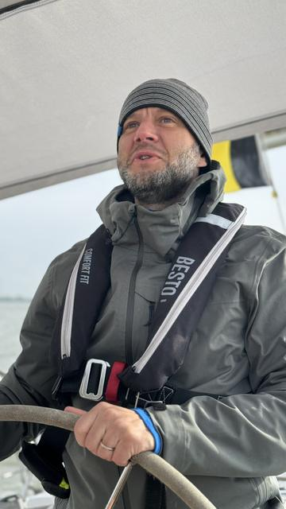

30 april 2024
Terug naar Zeebrugge
Antwerpen is en blijft uiteraard de échte thuishaven van Nomad, maar voor de oefentochtjes met de verschillende crews deze lente is het natuurlijk leuker om dat op zee te kunnen doen. Vandaar dat we Nomad meteen na het event teruggezeild hebben naar haar tweede thuis Zeebrugge.
Geen 6-7 beaufort zoals op de heentocht deze keer, maar een (te?) rustige 2 beaufort. Opstaan om 0500 doet altijd een beetje pijn, maar vertrekken met zicht op onze mooi verlichte stad was een welkome opsteker.


Na een paar uur op motor eindelijk de zeilen (met mooie sponsor-logo's!) kunnen hijsen en met hulp van de stroming waren we 10 uur later in Zeebrugge. De crew Bart, Krans en Vloe heeft elkaar en de boot wat beter leren kennen en lijkt helemaal klaar voor etappe 14 op de Atlantische Oceaan!


Leuke afsluiter met Leen en Titine en de crew van Noah Genda incl de gebroeders De Cort allemaal gezellig aan boord van Nomad 🥳🍻🍻. Er past dus gemakkelijk 12 man of meer in onze kajuit!